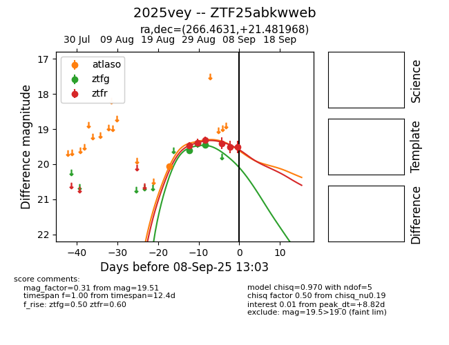

FINK: ZTF25abkwweb
Lasair: ZTF25abkwweb
ALeRCE: ZTF25abkwweb
TNS: 2025vey
YSE: 2025vey
ZTF25abkwweb (ztf,fink)
2025vey (tns,yse)
equatorial (ra, dec) = (266.4631,+21.48197)
galactic (l, b) = (45.9352,+23.62568)

last atlaso=20.06, ztfg=19.45, ztfr=19.51
1 atlaso, 3 ztfg, 6 ztfr detections